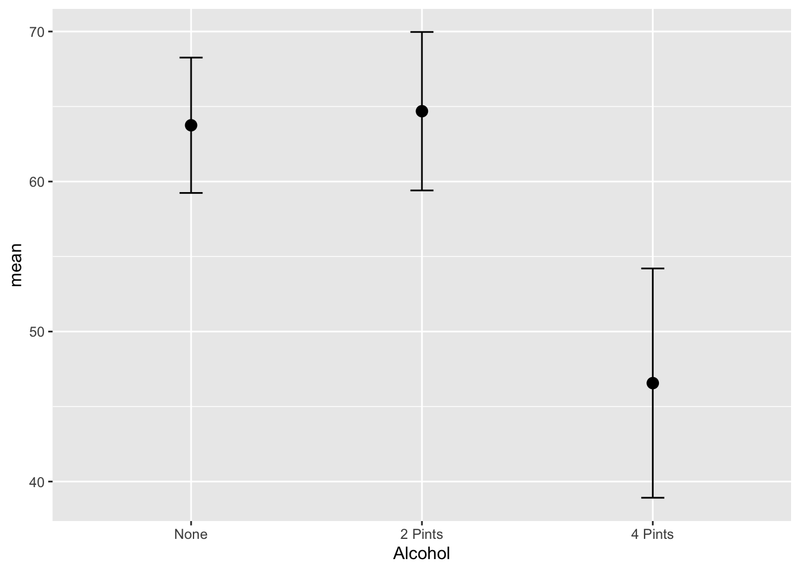
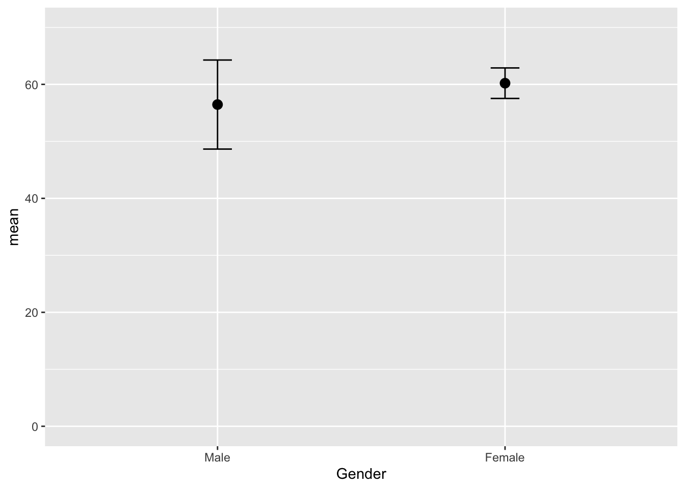
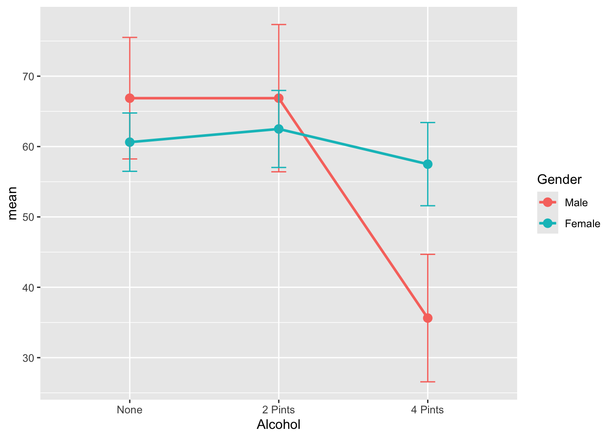
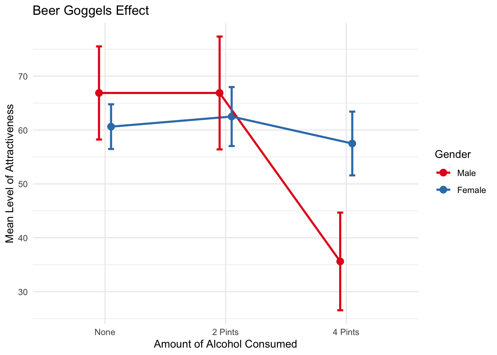

library(haven)
goggles <- read_sav("goggles.sav")Two-Way ANOVA
Two-Way ANOVA
Before starting this section please review the section One-Way ANOVA first
Revisiting One-Way ANOVA
One-way ANOVA is based on the general idea that the total variability \(SS_T\) is partitioned (divided or separated) into two types of variability. The variability between the groups \(SS_{between}\) and the variability within the groups \(SS_{within}\). Remember that the variability between the groups needed to be greater than the variability within the groups because that would indicate that the difference between the groups was greater than the measurement error that existed within the groups.
Main Effects
Two-way ANOVA goes beyond one-way ANOVA by analyzing the effects of two independent variables in the same experiment. In a two-way ANOVA the two independent variables are called main effects or factors and each main effect has its own individual hypothesis.
Interaction effects
Finally, the two-way ANOVA analyzes if there is an interaction effect between the two main effects or factors. An interaction effect occurs when the effect of one of the independent variables is not the same at all levels of the second independent variable. So the set up for a two-way ANOVA is:
Independent variable 1 = Main effect 1 = Factor 1
Independent variable 2 = Main effect 2 = Factor 2
Interaction effect = Interaction between Factors 1 & 2
Two-Way ANOVA Example
The example dataset tests what’s called the “beer googles effect”. Sometimes alcohol can have an effect on perceptions of attraction for potential dates, especially later in the evening at bars. The dataset tests whether perceptions of attractiveness change after drinking alcohol and whether males and females are effected by this phenomenon differently.
Variables
Two Independent Variables (Main Effects or Factors)
- Main Effect 1 = Alcohol 3 Levels (None, 2 Pints, 4 Pints)
- Main Effect 2 = Gender 2 Levels (Male and Female)
- Interaction Effect = Gender x Alcohol
- DV = Attractiveness of the partner selected at the end of the evening
Alternative Hypotheses
- \(H_1\) Alcohol has an effect on the attractiveness level of the selected partner
- \(H_2\) Gender has an effect on the attractiveness level of the partner.
- \(H_3\) There is an interaction effect between Alcohol and Gender
Sum of Squares variation estimates
Fixing the Variables
Get the dataset and import it
Check out Gender variable
goggles$Gender<labelled<double>[48]>: Gender
[1] 1 1 1 1 1 1 1 1 1 1 1 1 1 1 1 1 1 1 1 1 1 1 1 1 0 0 0 0 0 0 0 0 0 0 0 0 0 0
[39] 0 0 0 0 0 0 0 0 0 0
Labels:
value label
0 Male
1 FemaleCheck out Alcohol variable
goggles$Alcohol<labelled<double>[48]>: Alcohol Consumption
[1] 1 1 1 1 1 1 1 1 2 2 2 2 2 2 2 2 3 3 3 3 3 3 3 3 1 1 1 1 1 1 1 1 2 2 2 2 2 2
[39] 2 2 3 3 3 3 3 3 3 3
Labels:
value label
1 None
2 2 Pints
3 4 PintsCheck out Attractiveness variable
goggles$Attractiveness [1] 65 70 60 60 60 55 60 55 70 65 60 70 65 60 60 50 55 65 70 55 55 60 50 50 50
[26] 55 80 65 70 75 75 65 45 60 85 65 70 70 80 60 30 30 30 55 35 20 45 40
attr(,"label")
[1] "Attractiveness of Date"
attr(,"format.spss")
[1] "F8.0"
attr(,"display_width")
[1] 13Alcohol and Gender variables are factors. When they get imported from SPSS they don’t function as well because the focus is on the numbers, not the labels or words.We can use tidyverse and the mutate function to fix this.
goggles <- goggles %>%
mutate(Gender = factor(Gender, levels = c(0,1),
labels = c("Male", "Female")))We can do the same thing with the Alcohol variable. Make sure you know the levels or numbering of the variable
goggles$Alcohol<labelled<double>[48]>: Alcohol Consumption
[1] 1 1 1 1 1 1 1 1 2 2 2 2 2 2 2 2 3 3 3 3 3 3 3 3 1 1 1 1 1 1 1 1 2 2 2 2 2 2
[39] 2 2 3 3 3 3 3 3 3 3
Labels:
value label
1 None
2 2 Pints
3 4 PintsThen go ahead and mutate the variable as you did with Gender
goggles <- goggles %>%
mutate(Alcohol = factor(Alcohol, levels = c(1,2,3),
labels = c("None", "2 Pints", "4 Pints")))Running Two-Way ANOVA in R Studio
Now we can move to the Two-Way ANOVA analysis. “m3” is the new object to save results so the formula will have this structure.
# m3 <- aov (this is the computation you are using, like t.test) Then the rest of your formula should look like this (Dependent variable ~ Varible 1 + Variable 2 + Variable 1*Variable 2, data = [your dataset])
m3 <- aov(Attractiveness ~ Gender + Alcohol +
Gender*Alcohol, data = goggles)Check the results
summary(m3) Df Sum Sq Mean Sq F value Pr(>F)
Gender 1 169 168.8 2.032 0.161
Alcohol 2 3332 1666.1 20.065 7.65e-07 ***
Gender:Alcohol 2 1978 989.1 11.911 7.99e-05 ***
Residuals 42 3487 83.0
---
Signif. codes: 0 '***' 0.001 '**' 0.01 '*' 0.05 '.' 0.1 ' ' 1Key Findings from our output
Main effect of Alcohol on attractiveness
Interaction effect of Alcohol and Gender
What does this mean?
Graphs for the Main Effects
Let’s use a graph to understand this better
First let’s look at each variable individually
GogglesAlcohol <- goggles %>%
group_by(Alcohol) %>%
summarize(n = n(),
mean = mean(Attractiveness),
sd = sd(Attractiveness),
se = sd/sqrt(n),
ci = qt(0.975, df = n - 1) * sd / sqrt(n))Graph the Alcohol variable individually
ggplot(GogglesAlcohol, aes(x = Alcohol,
y = mean)) +
geom_point(size = 3) +
geom_line(size = 1) +
geom_errorbar(aes(ymin =mean - ci,
ymax = mean + ci),
width = .1)Warning: Using `size` aesthetic for lines was deprecated in ggplot2 3.4.0.
ℹ Please use `linewidth` instead.`geom_line()`: Each group consists of only one observation.
ℹ Do you need to adjust the group aesthetic?
Graph the Gender variable individually
GogglesGender <- goggles %>%
group_by(Gender) %>%
summarize(n = n(),
mean = mean(Attractiveness),
sd = sd(Attractiveness),
se = sd/sqrt(n),
ci = qt(0.975, df = n - 1) * sd / sqrt(n))Graph it
ggplot(GogglesGender, aes(x = Gender,
y = mean)) +
geom_point(size = 3) +
geom_line(size = 1) +
geom_errorbar(aes(ymin =mean - ci,
ymax = mean + ci),
width = .1) +
ylim(0,70)`geom_line()`: Each group consists of only one observation.
ℹ Do you need to adjust the group aesthetic?
Graph the Interaction Effect
Finally, we can graph relationships for both variables.
First find your descriptive statistics, but this time based on two independent variables
GogglesDescriptives <- goggles %>%
group_by(Alcohol, Gender) %>%
summarize(n = n(),
mean = mean(Attractiveness),
sd = sd(Attractiveness),
se = sd/sqrt(n),
ci = qt(0.975, df = n - 1) * sd / sqrt(n))`summarise()` has grouped output by 'Alcohol'. You can override using the
`.groups` argument.Check it
GogglesDescriptives# A tibble: 6 × 7
# Groups: Alcohol [3]
Alcohol Gender n mean sd se ci
<fct> <fct> <int> <dbl> <dbl> <dbl> <dbl>
1 None Male 8 66.9 10.3 3.65 8.64
2 None Female 8 60.6 4.96 1.75 4.14
3 2 Pints Male 8 66.9 12.5 4.43 10.5
4 2 Pints Female 8 62.5 6.55 2.31 5.47
5 4 Pints Male 8 35.6 10.8 3.83 9.06
6 4 Pints Female 8 57.5 7.07 2.5 5.91Use a line graph to graph the relationship
ggplot(GogglesDescriptives, aes(x = Alcohol,
y = mean,
group=Gender,
color=Gender)) +
geom_point(size = 3) +
geom_line(size = 1) +
geom_errorbar(aes(ymin =mean - ci,
ymax = mean + ci),
width = .1)
Use dodge functions to make graph clearer
pd <- position_dodge(0.2)
ggplot(GogglesDescriptives,
aes(x = Alcohol,
y = mean,
group=Gender,
color=Gender)) +
geom_point(position = pd,
size = 3) +
geom_line(position = pd,
size = 1) +
geom_errorbar(aes(ymin = mean - ci,
ymax = mean + ci),
width = .1,
position= pd)All the bells and whistles
pd <- position_dodge(0.2)
ggplot(GogglesDescriptives,
aes(x = Alcohol,
y = mean,
group=Gender,
color=Gender)) +
geom_point(position=pd,
size = 3) +
geom_line(position = pd,
size = 1) +
geom_errorbar(aes(ymin = mean - ci,
ymax = mean + ci),
width = .1,
position = pd,
size = 1) +
scale_color_brewer(palette="Set1") +
theme_minimal() +
labs(title = "Beer Goggels Effect",
x = "Amount of Alcohol Consumed",
y = "Mean Level of Attractiveness",
color = "Gender")
Use Tukey to look at specific differences in the groups you are interested in
TukeyHSD(m3) Tukey multiple comparisons of means
95% family-wise confidence level
Fit: aov(formula = Attractiveness ~ Gender + Alcohol + Gender * Alcohol, data = goggles)
$Gender
diff lwr upr p adj
Female-Male 3.75 -1.558607 9.058607 0.1613818
$Alcohol
diff lwr upr p adj
2 Pints-None 0.9375 -6.889643 8.764643 0.9544456
4 Pints-None -17.1875 -25.014643 -9.360357 0.0000105
4 Pints-2 Pints -18.1250 -25.952143 -10.297857 0.0000040
$`Gender:Alcohol`
diff lwr upr p adj
Female:None-Male:None -6.250 -19.851381 7.351381 0.7432243
Male:2 Pints-Male:None 0.000 -13.601381 13.601381 1.0000000
Female:2 Pints-Male:None -4.375 -17.976381 9.226381 0.9277939
Male:4 Pints-Male:None -31.250 -44.851381 -17.648619 0.0000003
Female:4 Pints-Male:None -9.375 -22.976381 4.226381 0.3286654
Male:2 Pints-Female:None 6.250 -7.351381 19.851381 0.7432243
Female:2 Pints-Female:None 1.875 -11.726381 15.476381 0.9983764
Male:4 Pints-Female:None -25.000 -38.601381 -11.398619 0.0000306
Female:4 Pints-Female:None -3.125 -16.726381 10.476381 0.9825753
Female:2 Pints-Male:2 Pints -4.375 -17.976381 9.226381 0.9277939
Male:4 Pints-Male:2 Pints -31.250 -44.851381 -17.648619 0.0000003
Female:4 Pints-Male:2 Pints -9.375 -22.976381 4.226381 0.3286654
Male:4 Pints-Female:2 Pints -26.875 -40.476381 -13.273619 0.0000080
Female:4 Pints-Female:2 Pints -5.000 -18.601381 8.601381 0.8796489
Female:4 Pints-Male:4 Pints 21.875 8.273619 35.476381 0.0002776For us, the most important difference is that males are more likely to choose a less attractive person at 4 pints of alcohol than females
Results Section
First write out the main effects
There was a significant main effect of the amount of alcohol consumed on the attractiveness of the date that was selected, F(2, 42) = 20.07, p < .001.
There was not a significant main effect of gender on the attractiveness of the date that was selected, F(1, 42) = 2.03, p = .161.
Second, write out the interaction effect
There was a significant interaction effect between amount of alcohol consumed and gender on the attractiveness of the date that was selected F(2, 42) = 11.91, p < .001.
Third, write out any relevant Tukey findings
TukeyHSD post hoc tests revealed that at the largest amount of alcohol consumption (4 pints) Males were significantly more likely to choose a less attractive date (M=35.6, SE=3.83) in comparison to females (M=57.5, SE=57.5). This difference, 21.88, 95% CI[8.27, 35.48] was significant with an adjusted p = .0003.